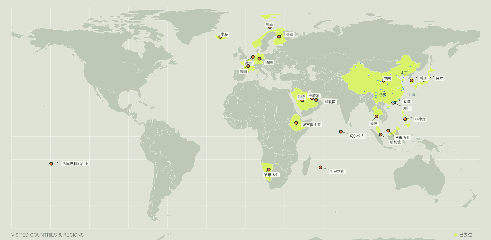
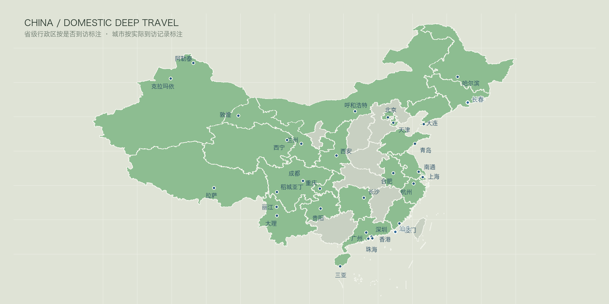

世界足迹
COUNTRIES / REGIONS22 PLACES UNLOCKED
A PERSONAL ARCHIVE OF DISTANCE
把看过的山海、城市与夜空，留在一份只分享给朋友的旅行档案里。
旅行不是收集坐标。是让每一次远行，都在记忆里留下自己的光。


从东京雨夜的街头开始，这一页留给在日本走过的每一段路。
从夜空下的箭袋树，到红沙丘与大西洋，这一页留给最辽阔的一段旅程。
泻湖、远山和水上屋。这一页留给法属波利尼西亚最接近蓝色的一段旅程。
礁湖、山脊与印度洋的风。这一页留给毛里求斯不断变色的海岛日常。
雪线、海风、冰洞和一路向北的光。这一页留给北欧冷而明亮的旅程。
珊瑚环礁、浅海和水上屋。这一页留给印度洋上一段低声发亮的旅程。
地图还没有结束。澳洲、美洲、南极洲，下一段旅程会从哪里开始？